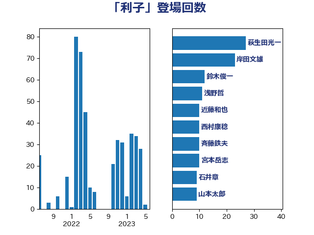

単語「利子」

| 萩生田光一 | 自由民主党 | 44 回 |
| 梶山弘志 | 自由民主党 | 38 回 |
| 菅義偉 | 自由民主党 | 35 回 |
| 麻生太郎 | 自由民主党 | 30 回 |
| 西村康稔 | 自由民主党 | 29 回 |
| 石井章 | 日本維新の会 | 15 回 |
| 高橋千鶴子 | 日本共産党 | 15 回 |
| 岸田文雄 | 自由民主党 | 14 回 |
| 田村憲久 | 自由民主党 | 11 回 |
| 宮本岳志 | 日本共産党 | 10 回 |
| 近藤和也 | 立憲民主党 | 10 回 |
| 古賀友一郎 | 自由民主党 | 9 回 |
| 斉藤鉄夫 | 公明党 | 9 回 |
| 赤羽一嘉 | 公明党 | 9 回 |
| 緑川貴士 | 立憲民主党 | 8 回 |
| 浅野哲 | 国民民主党 | 7 回 |
| 末松信介 | 自由民主党 | 6 回 |
| 鈴木俊一 | 自由民主党 | 6 回 |
| 江島潔 | 自由民主党 | 5 回 |
| 西田昌司 | 自由民主党 | 5 回 |
| ながえ孝子 | 無所属 | 4 回 |
| 中野洋昌 | 公明党 | 4 回 |
| 伊藤岳 | 日本共産党 | 4 回 |
| 武田良太 | 自由民主党 | 4 回 |
| 玉木雄一郎 | 国民民主党 | 4 回 |
| 石川博崇 | 公明党 | 4 回 |
| 赤澤亮正 | 自由民主党 | 4 回 |
| 古賀之士 | 立憲民主党 | 3 回 |
| 吉川ゆうみ | 自由民主党 | 3 回 |
| 和田義明 | 自由民主党 | 3 回 |
| 大塚耕平 | 国民民主党 | 3 回 |
| 山岡達丸 | 立憲民主党 | 3 回 |
| 平口洋 | 自由民主党 | 3 回 |
| 平木大作 | 公明党 | 3 回 |
| 早坂敦 | 日本維新の会 | 3 回 |
| 早稲田ゆき | 立憲民主党 | 3 回 |
| 河西宏一 | 公明党 | 3 回 |
| 片山さつき | 自由民主党 | 3 回 |
| 牧山ひろえ | 立憲民主党 | 3 回 |
| 田村貴昭 | 日本共産党 | 3 回 |
| 笠井亮 | 日本共産党 | 3 回 |
| 落合貴之 | 立憲民主党 | 3 回 |
| 野上浩太郎 | 自由民主党 | 3 回 |
| 中西健治 | 自由民主党 | 2 回 |
| 井上貴博 | 自由民主党 | 2 回 |
| 伊波洋一 | 無所属 | 2 回 |
| 佐藤啓 | 自由民主党 | 2 回 |
| 吉川元 | 立憲民主党 | 2 回 |
| 堀井学 | 自由民主党 | 2 回 |
| 宮本周司 | 自由民主党 | 2 回 |
| 小倉將信 | 自由民主党 | 2 回 |
| 山本博司 | 公明党 | 2 回 |
| 山田賢司 | 自由民主党 | 2 回 |
| 山際大志郎 | 自由民主党 | 2 回 |
| 川田龍平 | 立憲民主党 | 2 回 |
| 平沢勝栄 | 自由民主党 | 2 回 |
| 末松義規 | 立憲民主党 | 2 回 |
| 本田太郎 | 自由民主党 | 2 回 |
| 梅谷守 | 立憲民主党 | 2 回 |
| 浅田均 | 日本維新の会 | 2 回 |
| 浮島智子 | 公明党 | 2 回 |
| 秋野公造 | 公明党 | 2 回 |
| 舞立昇治 | 自由民主党 | 2 回 |
| 芳賀道也 | 国民民主党 | 2 回 |
| 金子恭之 | 自由民主党 | 2 回 |
| あかま二郎 | 自由民主党 | 1 回 |
| あべ俊子 | 自由民主党 | 1 回 |
| こやり隆史 | 自由民主党 | 1 回 |
| 三木亨 | 自由民主党 | 1 回 |
| 世耕弘成 | 自由民主党 | 1 回 |
| 中山展宏 | 自由民主党 | 1 回 |
| 中村裕之 | 自由民主党 | 1 回 |
| 中西祐介 | 自由民主党 | 1 回 |
| 中野英幸 | 自由民主党 | 1 回 |
| 丹羽秀樹 | 自由民主党 | 1 回 |
| 二階俊博 | 自由民主党 | 1 回 |
| 仁木博文 | 無所属 | 1 回 |
| 伊佐進一 | 公明党 | 1 回 |
| 伊藤孝江 | 公明党 | 1 回 |
| 伊藤渉 | 公明党 | 1 回 |
| 佐藤英道 | 公明党 | 1 回 |
| 前原誠司 | 国民民主党 | 1 回 |
| 加藤勝信 | 自由民主党 | 1 回 |
| 古川元久 | 国民民主党 | 1 回 |
| 城井崇 | 立憲民主党 | 1 回 |
| 城内実 | 自由民主党 | 1 回 |
| 塩田博昭 | 公明党 | 1 回 |
| 大家敏志 | 自由民主党 | 1 回 |
| 宮本徹 | 日本共産党 | 1 回 |
| 小林鷹之 | 自由民主党 | 1 回 |
| 小田原潔 | 自由民主党 | 1 回 |
| 山口那津男 | 公明党 | 1 回 |
| 山崎正恭 | 公明党 | 1 回 |
| 岡本あき子 | 立憲民主党 | 1 回 |
| 岩渕友 | 日本共産党 | 1 回 |
| 杉久武 | 公明党 | 1 回 |
| 柿沢未途 | 無所属 | 1 回 |
| 森屋隆 | 立憲民主党 | 1 回 |
| 森本真治 | 立憲民主党 | 1 回 |
| 櫻井周 | 立憲民主党 | 1 回 |
| 武部新 | 自由民主党 | 1 回 |
| 沢田良 | 日本維新の会 | 1 回 |
| 浜地雅一 | 公明党 | 1 回 |
| 源馬謙太郎 | 立憲民主党 | 1 回 |
| 熊谷裕人 | 立憲民主党 | 1 回 |
| 熊野正士 | 公明党 | 1 回 |
| 片山大介 | 日本維新の会 | 1 回 |
| 牧義夫 | 立憲民主党 | 1 回 |
| 田名部匡代 | 立憲民主党 | 1 回 |
| 矢倉克夫 | 公明党 | 1 回 |
| 石井啓一 | 公明党 | 1 回 |
| 石井苗子 | 日本維新の会 | 1 回 |
| 石垣のりこ | 立憲民主党 | 1 回 |
| 礒崎哲史 | 国民民主党 | 1 回 |
| 舟山康江 | 国民民主党 | 1 回 |
| 若松謙維 | 公明党 | 1 回 |
| 藤川政人 | 自由民主党 | 1 回 |
| 角田秀穂 | 公明党 | 1 回 |
| 辻元清美 | 立憲民主党 | 1 回 |
| 逢坂誠二 | 立憲民主党 | 1 回 |
| 酒井庸行 | 自由民主党 | 1 回 |
| 野田聖子 | 自由民主党 | 1 回 |
| 長友慎治 | 国民民主党 | 1 回 |
| 長坂康正 | 自由民主党 | 1 回 |
| 青木愛 | 立憲民主党 | 1 回 |
| 鰐淵洋子 | 公明党 | 1 回 |